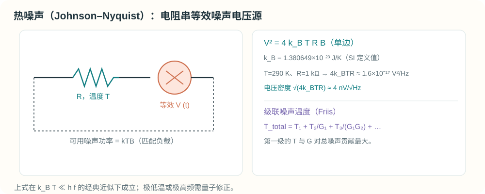
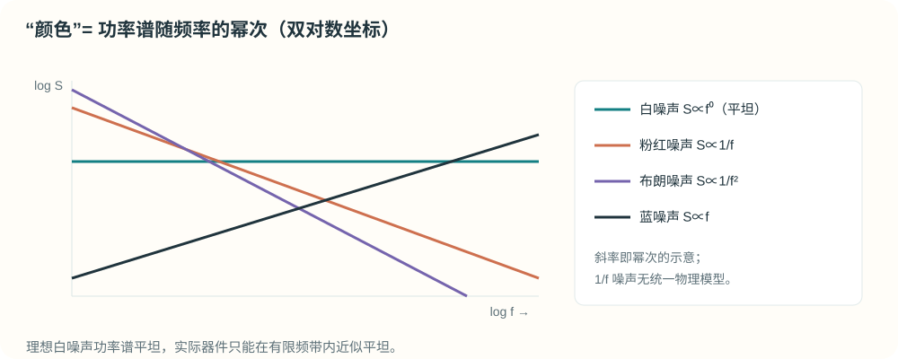
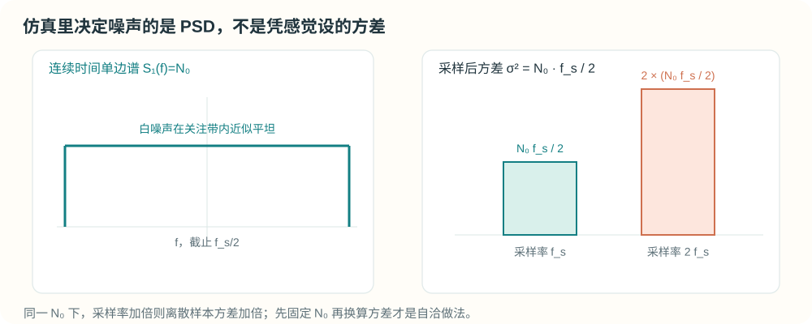

CHAPTER 10 · 随机过程与谱
白噪声与热噪声
“白”只描述功率谱平坦，并不意味着取独立。把这一章讲清楚，需要区分双边与单边谱约定、不相关与独立、理想化模型与物理可实现的带限近似，并说明离散仿真中方差如何随采样率变化。
- 写出双边与单边白噪声谱并换算带宽内功率
- 用 Johnson-Nyquist 公式与噪声温度估算器件噪声
- 用 Johnson-Nyquist 公式与噪声温度估算器件噪声
“白”到底白在哪里？
白噪声是均值为零的宽平稳过程，其双边功率谱在所有频率上为常数：
这里要小心两个容易混的约定：双边谱在正、负频率上都有值；若只画 ω≥0 的单边谱，则应为 S₁(ω)=N₀（ω≥0）。同一物理噪声在两套约定下的带宽内功率必须一致，这是检验换算是否正确的硬标准。N₀ 的单位是 V²/Hz（若以 f 为自变量），而 SW(ω) 的密度单位是 V²·s/rad。
由维纳-辛钦定理，自相关退化为一个冲激，于是不同时刻的取值不相关：
不相关不等于独立：“无记忆”“每次抽样互相独立”这类说法只在白噪声同时是联合高斯（即 AWGN）时才成立。一般白噪声只保证不同时刻不相关；要得到独立，必须额外假设高斯性。这与第 07 章的结论完全一致。
工程中常写 AWGN（Additive White Gaussian Noise），即在白噪声之上附加高斯性。用中心极限定理为高斯性做辩护时要带上条件：需要大量相互独立、方差有限且贡献均匀的微小成分叠加。热噪声在多数实用条件下接近高斯，但这是近似，不是恒等式。
理想化的代价：把 (10.1) 代入总功率公式得到 E[W²]=(1/2π)∫SWdω→∞。因此理想白噪声是无限功率的极限模型，只能作为“在关注频带内近似平坦”的近似使用，不能当作某个真实信号。
热噪声：电阻两端为什么总有微小电压？
导体中的自由电子持续做随机热运动，宏观上表现为电阻两端无法消除的电压波动。Johnson 在 1928 年报告了这一测量，Nyquist 同年给出热力学解释，因此又称 Johnson–Nyquist 噪声。在经典近似 hf≪kBT 下，一个电阻 R 在带宽 B 内的开路均方噪声电压为：
与之对应，匹配负载上可提取的可用噪声功率是 kBTB，与 R 无关——这也是“为什么放大器噪声用温度而不是电阻描述”的原因。取 kB=1.380649×10⁻²³ J/K（SI 定义值），T=290 K、R=1 kΩ 时：
对其开方得约 4 nV/√Hz，即精密放大器常标注的噪声底线量级——它正是热噪声的理论下限，而不是某个工艺参数。注意 (10.3)、(10.4) 的数值均按上述假设精确计算，非工程实测。

噪声温度与级联：把器件内部噪声折算为等效输入温度 Te，其优点是可线性相加。级联后 Ttotal=T₁+T₂/G₁+T₃/(G₁G₂)+…，因此接收机第一级通常采用低噪声放大器（LNA）。式子在 hf≪kBT 的经典近似下成立；极低温或极高频需要量子修正。
有色噪声与噪声整形
谱不平坦的噪声统称有色噪声，按幂次习惯命名。需要强调：这些名称只是对功率谱随频率变化趋势的描述，并不能反推出样本路径的分布或物理机制。
| 类型 | PSD 形式 | 典型来源 |
|---|---|---|
| 白噪声 | S(ω)=常数 | 理想化模型；带限热噪声近似 |
| 粉红噪声（1/f） | S(ω)∝1/|ω| | 电子器件闪烁噪声；无统一物理机制 |
| 布朗噪声（1/f²） | S(ω)∝1/ω² | 随机游走、积分后的白噪声 |
| 蓝噪声 | S(ω)∝|ω| | 微分白噪声、部分音频处理 |

噪声整形是把白噪声通过滤波器变成指定谱形的过程。Σ-Δ 调制器把量化噪声推向高频，再用低通滤波去掉带外噪声，从而提高信号带内的有效信噪比。注意：整形不减少总噪声功率，只是改变了它在频率上的分布——这一点与“提高总功率”必须区分开。
离散仿真中方差随采样率怎么变？
仿真时直接把“噪声样本的方差”设为 1，这在改变采样率时会静默地改变物理噪声的强度。设关注的连续噪声在带内具有单边密度 N₀，采样率为 fs。奈奎斯特带宽是 fs/2，因此每个样本承担的噪声功率为：
所以保持 N₀ 不变、把采样率加倍时，样本方差也应加倍；反之，若把方差固定为 1 而拉高采样率，就相当于把隐含的 N₀ 减半。自洽的做法是：先根据物理模型确定 N₀，再按 (10.5) 换算方差。

采样与混叠：若采样率低于两倍最高关注频率，高频噪声会混叠到带内，使离散样本不再近似白噪声。(10.5) 的前提是采样前已经限制了带宽（抗混叠滤波），不能用它来弥补混叠带来的偏差。
把三处数值关系算准
from math import pi, sqrt, isclose
# 1) Nyquist: 290 K, 1 kOhm -> voltage density near 4 nV/sqrt(Hz)
kB, T, R = 1.380649e-23, 290.0, 1000.0
density = 4*kB*T*R # V^2/Hz, single sided
assert isclose(density, 1.6019e-17, rel_tol=2e-3)
assert isclose(sqrt(density), 4.008e-9, rel_tol=2e-3) # ~4 nV/sqrt(Hz)
# 2) Two- and one-sided conventions agree over bandwidth B
N0, B = 2.0, 50.0
band_power = (1/(2*pi))*(N0/2)*(2*(2*pi*B)) # integrate two-sided over |w|<=2 pi B
assert isclose(band_power, N0*B, abs_tol=1e-12)
# 3) Discrete variance scales with the sample rate
fs = 8000.0
var1 = N0*fs/2
assert isclose(N0*(2*fs)/2, 2*var1, abs_tol=1e-9)
自检：把 σ² 固定为 1 并提高采样率，等效地改变了什么？
改变了隐含的单边噪声密度：由 σ²=N₀fs/2 可知 N₀=2σ²/fs。采样率越高，隐含的 N₀ 越小，相当于把物理噪声变得更弱。
边界：哪些说法不能外推
- 理想白噪声不可实现：它的总功率发散。任何声称“产生了理想白噪声”的仿真实际上都是带限的。
- 白≠独立：白噪声只保证不同时刻不相关；只有联合高斯（AWGN）时才是独立。不能把白噪声当成“每次抽样完全独立”的普适事实。
- 热噪声靠近高斯是近似：它来自大量独立微小贡献的叠加，但“大量”与“独立”都是理想化条件，精确分布仍需由具体统计模型确定。
- 同 PSD 不等于同分布：两个过程的功率谱可以完全相同而分布不同（参见第 09 章），因此谱平坦并不排除任何特定过程。
- 整形不减少总噪声：噪声整形重新分配功率在频率上的位置，不降低总功率，带内信噪比的提高以带外噪声增加为代价。
这些边界共同说明：白噪声与热噪声是分析噪声的起点模型，而不是对任何具体器件噪声的完整描述。
参考与核查依据
- ProbabilityCourse · Stationary Processes：宽平稳白噪声的均值、自相关与谱约定。
- MIT OpenCourseWare · Random Processes：白噪声作为宽平稳过程的定义与相关结构。
- ProbabilityCourse · Autocorrelation and PSD：自相关与功率谱的变换关系，用于推导 (10.2)。